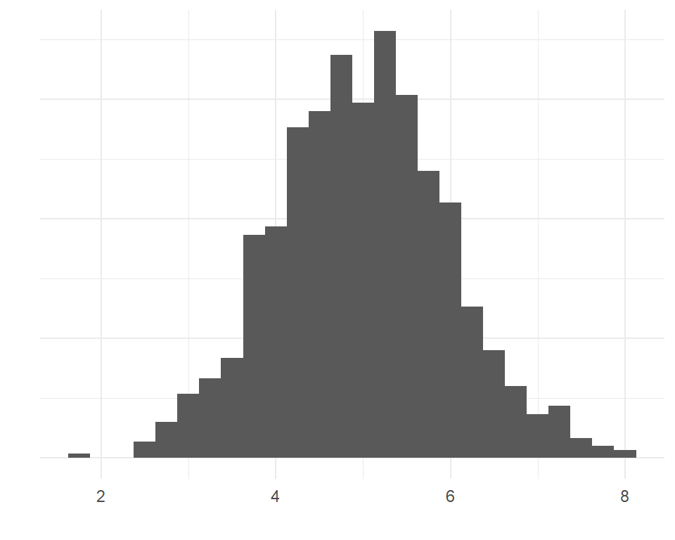
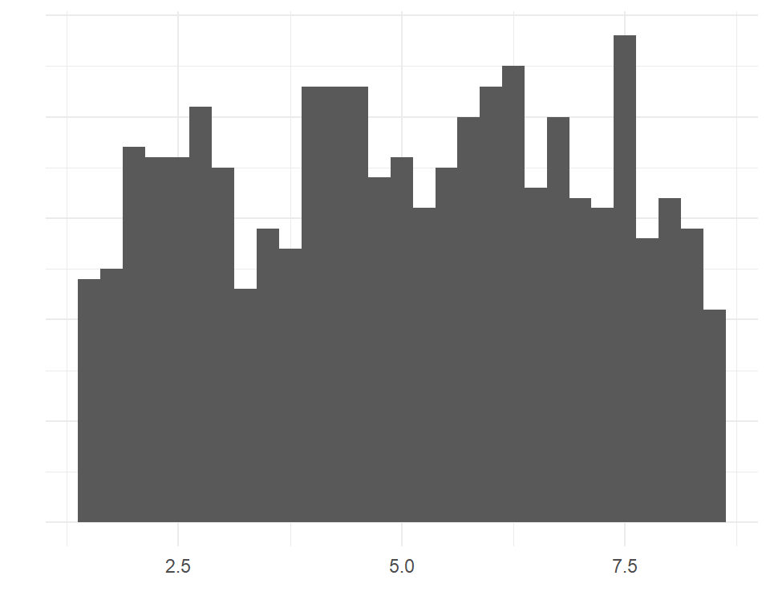
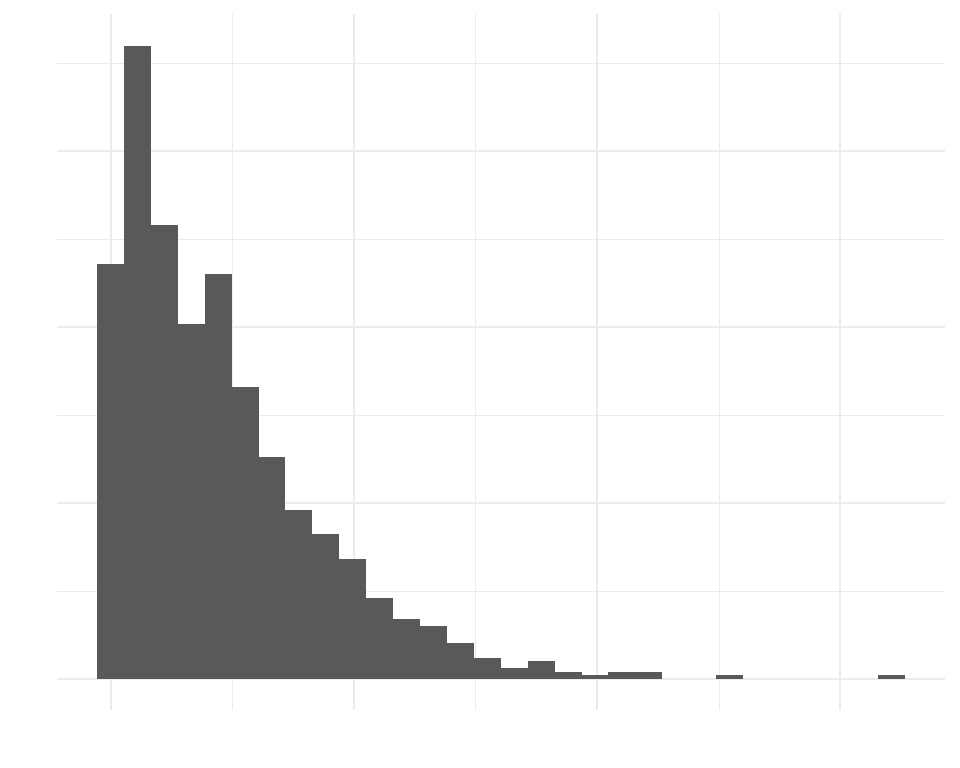
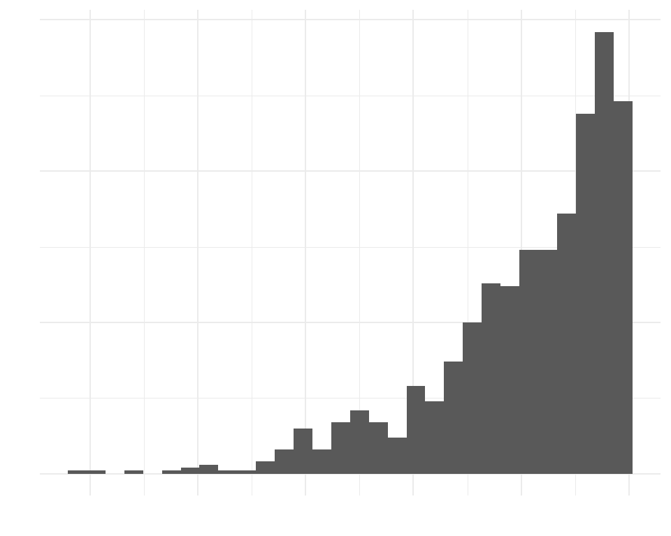
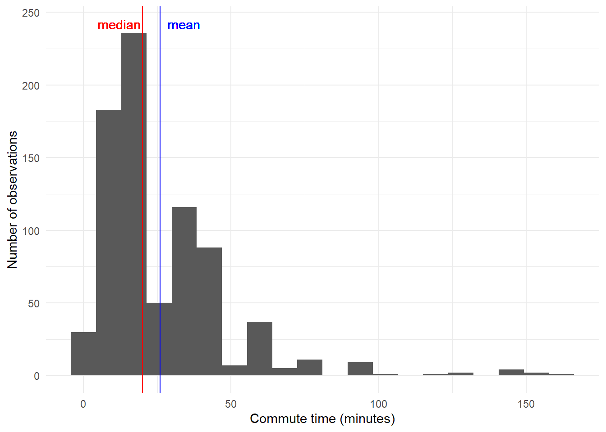

Describing data: part 2
Lecture 8
Logistics
Project proposals
- I will get my feedback to you soon–will be posted as a github issue
. . .
Project descriptive statistics
- Due Thursday June 6. Instructions are up; template and example to come this afternoon.
Today
- Finish univariate summaries
- Preparing data frames
Where we left off: summarizing numeric variables
Summarizing a distribution
Center
- median(dataset$var, na.rm = TRUE)
- mean(dataset$var, na.rm = TRUE)
Spread
- quantile(dataset$var, na.rm = TRUE)
- sd(dataset$var, na.rm = TRUE)
(Almost) everything
- summary(dataset$var)
Exercise question 2
glimpse(acs12)Rows: 2,000
Columns: 13
$ income <int> 60000, 0, NA, 0, 0, 1700, NA, NA, NA, 45000, NA, 8600, 0,…
$ employment <fct> not in labor force, not in labor force, NA, not in labor …
$ hrs_work <int> 40, NA, NA, NA, NA, 40, NA, NA, NA, 84, NA, 23, NA, NA, N…
$ race <fct> white, white, white, white, white, other, white, other, a…
$ age <int> 68, 88, 12, 17, 77, 35, 11, 7, 6, 27, 8, 69, 69, 17, 10, …
$ gender <fct> female, male, female, male, female, female, male, male, m…
$ citizen <fct> yes, yes, yes, yes, yes, yes, yes, yes, yes, yes, yes, ye…
$ time_to_work <int> NA, NA, NA, NA, NA, 15, NA, NA, NA, 40, NA, 5, NA, NA, NA…
$ lang <fct> english, english, english, other, other, other, english, …
$ married <fct> no, no, no, no, no, yes, no, no, no, yes, no, no, yes, no…
$ edu <fct> college, hs or lower, hs or lower, hs or lower, hs or low…
$ disability <fct> no, yes, no, no, yes, yes, no, yes, no, no, no, no, yes, …
$ birth_qrtr <fct> jul thru sep, jan thru mar, oct thru dec, oct thru dec, j…Question 2 solutions
What is the mean of hrs_work? What is the median? (there are two ways to get this info)
Approach 1:
mean(acs12$hrs_work, na.rm = TRUE)[1] 37.97706median(acs12$hrs_work, na.rm = TRUE)[1] 40Approach 2:
summary(acs12$hrs_work) Min. 1st Qu. Median Mean 3rd Qu. Max. NA's
1.00 32.00 40.00 37.98 40.00 99.00 1041 Question 2 solutions
What is the standard deviation of hrs_work?
sd(acs12$hrs_work, na.rm = TRUE)[1] 13.49768Question 2 solutions
What proportion of people in the data set are missing information (have NAs) for this variable? (there are many ways to do this)
# Find the number of NA values
summary(acs12$hrs_work) Min. 1st Qu. Median Mean 3rd Qu. Max. NA's
1.00 32.00 40.00 37.98 40.00 99.00 1041 # Find the total number of observations
glimpse(acs12)Rows: 2,000
Columns: 13
$ income <int> 60000, 0, NA, 0, 0, 1700, NA, NA, NA, 45000, NA, 8600, 0,…
$ employment <fct> not in labor force, not in labor force, NA, not in labor …
$ hrs_work <int> 40, NA, NA, NA, NA, 40, NA, NA, NA, 84, NA, 23, NA, NA, N…
$ race <fct> white, white, white, white, white, other, white, other, a…
$ age <int> 68, 88, 12, 17, 77, 35, 11, 7, 6, 27, 8, 69, 69, 17, 10, …
$ gender <fct> female, male, female, male, female, female, male, male, m…
$ citizen <fct> yes, yes, yes, yes, yes, yes, yes, yes, yes, yes, yes, ye…
$ time_to_work <int> NA, NA, NA, NA, NA, 15, NA, NA, NA, 40, NA, 5, NA, NA, NA…
$ lang <fct> english, english, english, other, other, other, english, …
$ married <fct> no, no, no, no, no, yes, no, no, no, yes, no, no, yes, no…
$ edu <fct> college, hs or lower, hs or lower, hs or lower, hs or low…
$ disability <fct> no, yes, no, no, yes, yes, no, yes, no, no, no, no, yes, …
$ birth_qrtr <fct> jul thru sep, jan thru mar, oct thru dec, oct thru dec, j…Question 2 solutions
Now that we have those values, we can use R to do the math
# Divide!
1041/2000[1] 0.5205Shape


Shape
- We’ll go over how to make plots later
- But summary statistics tell you things about shape too
Skew

Right-skewed data

Left-skewed data
Skew
- Extreme values influence the mean more than the median
- When mean is higher than median: data might be skewed right (and vice versa)
Example: American Community Survey commute time
time_to_work: Travel time to work, in minutes.
mean_commute <- mean(acs12$time_to_work, na.rm = TRUE)
median_commute <- median(acs12$time_to_work, na.rm = TRUE)mean_commute[1] 25.99745median_commute[1] 20Example: American Community Survey commute time

Shape: Quartiles
- Location of quartiles also tells you something about shape
summary(acs12$time_to_work) Min. 1st Qu. Median Mean 3rd Qu. Max. NA's
1 10 20 26 30 163 1217 Review
Categorical data: look at the available categories and how many observations are in each category
unique(dataframe$variable)table(dataframe$variable, useNA = "always")table(dataframe$variable1, dataframe$variable2, useNA = "always")
Review
- Numeric data: Look at summary statistics that tell you something about the distribution
summary(dataframe$variable)sd(dataframe$variable, na.rm = TRUE)
Modifying data frames
Removing observations
You may not be interested in all observations
Example:
- RQ: How is commute time related to hours worked?
Removing observations
- How is commute time related to hours worked?
- Data: ACS 2012
glimpse(acs12)Rows: 2,000
Columns: 13
$ income <int> 60000, 0, NA, 0, 0, 1700, NA, NA, NA, 45000, NA, 8600, 0,…
$ employment <fct> not in labor force, not in labor force, NA, not in labor …
$ hrs_work <int> 40, NA, NA, NA, NA, 40, NA, NA, NA, 84, NA, 23, NA, NA, N…
$ race <fct> white, white, white, white, white, other, white, other, a…
$ age <int> 68, 88, 12, 17, 77, 35, 11, 7, 6, 27, 8, 69, 69, 17, 10, …
$ gender <fct> female, male, female, male, female, female, male, male, m…
$ citizen <fct> yes, yes, yes, yes, yes, yes, yes, yes, yes, yes, yes, ye…
$ time_to_work <int> NA, NA, NA, NA, NA, 15, NA, NA, NA, 40, NA, 5, NA, NA, NA…
$ lang <fct> english, english, english, other, other, other, english, …
$ married <fct> no, no, no, no, no, yes, no, no, no, yes, no, no, yes, no…
$ edu <fct> college, hs or lower, hs or lower, hs or lower, hs or low…
$ disability <fct> no, yes, no, no, yes, yes, no, yes, no, no, no, no, yes, …
$ birth_qrtr <fct> jul thru sep, jan thru mar, oct thru dec, oct thru dec, j…- Need to remove people who are unemployed/not in labor force (and don't have a job or a commute!)Removing observations
- How? With
filter() filter(dataframe, condition)
acs12_employedonly <- filter(acs12, employment == "employed")- Did it work? Check with
table()
table(acs12_employedonly$employment, useNA = "always")
not in labor force unemployed employed <NA>
0 0 843 0 Conditions
filter(acs12, employment == "employed")- condition:
employment == "employed" - This specifies which observations you want to keep
- Common comparison operators:
==: equal to (note there are two equals signs!)!=: not equal to>,>=: greater than, greater than or equal to<,<=: less than, less than or equal to
Values:
- Can be numbers, letters/words, or TRUE/FALSE–should match the response options of your variable
- Put letters/words in quotation marks
Condition examples
filter(acs12, citizen == "no")filter(acs12, income <= 12000)filter(acs12, birth_qrtr != "jan thru mar")filter(acs12, hrs_work > 20)
Other useful condition operators
Two or more requirements
&: and|: orfilter(acs12, citizen == "no" & lang == "english")filter(acs12, race == "black" | race == "asian")
Missing values
is.na()!is.na()- is not missing – good for removing rows with missing values
filter(acs12, !is.na(income))
Common mistakes and error messages
filter(acs12, employment = "employed")Error in `filter()`:
! We detected a named input.
ℹ This usually means that you've used `=` instead of `==`.
ℹ Did you mean `employment == "employed"`?Common mistakes and error messages
filter(acs12, employment == employed)Error in `filter()`:
ℹ In argument: `employment == employed`.
Caused by error:
! object 'employed' not foundCommon mistakes and error messages
filter(acs12, employment == "employd")# A tibble: 0 × 13
# ℹ 13 variables: income <int>, employment <fct>, hrs_work <int>, race <fct>,
# age <int>, gender <fct>, citizen <fct>, time_to_work <int>, lang <fct>,
# married <fct>, edu <fct>, disability <fct>, birth_qrtr <fct>Common mistakes and error messages
filter(acs12, employment == "Employed")# A tibble: 0 × 13
# ℹ 13 variables: income <int>, employment <fct>, hrs_work <int>, race <fct>,
# age <int>, gender <fct>, citizen <fct>, time_to_work <int>, lang <fct>,
# married <fct>, edu <fct>, disability <fct>, birth_qrtr <fct>Exercise: Filtering
Clone and open the project repo now (ex-5-29-yourusername)
Then open the .qmd file and try out some filtering
For next time
- Read IMS chapters 4 and 5, if you haven’t already!